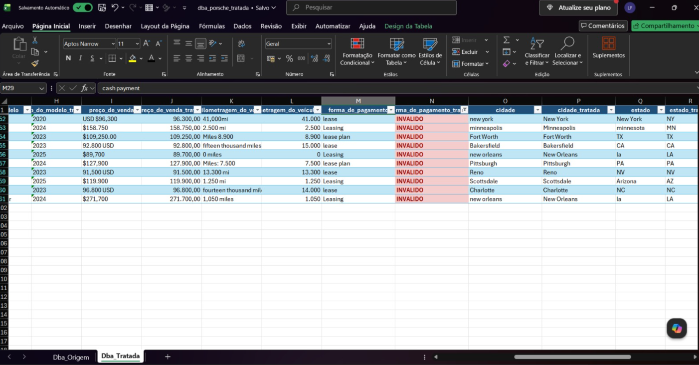
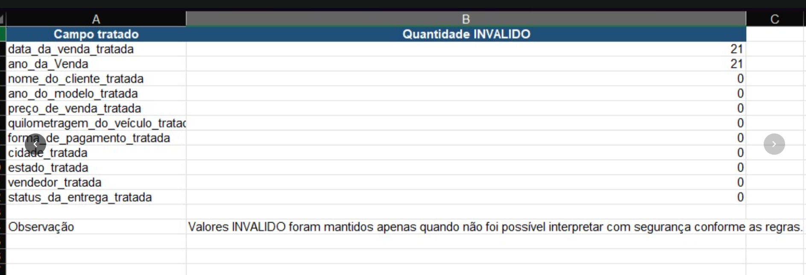

Contexto
Durante o curso, foi utilizada uma base fictícia de vendas de veículos Porsche. A base apresentava inconsistências comuns em projetos de dados, como datas em formatos diferentes, valores numéricos despadronizados, estados sem uniformidade, meios de pagamento variados e status de entrega inconsistentes.
O desafio foi transformar essa base em informações organizadas e confiáveis para apoiar uma leitura comercial simples e objetiva.
Objetivo
Construir um fluxo de análise que conectasse entendimento de negócio, tratamento de dados e dashboard, utilizando Inteligência Artificial como apoio nas etapas de estruturação, validação e criação da interface.
Processo
O projeto foi dividido em três etapas principais: tratamento da base, estruturação dos dados e construção do dashboard.
1. Tratamento
Padronização de datas, nomes, anos, valores, quilometragem, cidades, estados, meios de pagamento e status de entrega.
2. Validação
Criação de colunas tratadas e identificação de registros inválidos apenas quando não era possível interpretar com segurança.
3. Dashboard
Construção de uma página HTML/CSS com filtros e indicadores para responder perguntas de negócio.
Entregáveis
Principais insights
O dashboard permite identificar rapidamente os anos com maior volume de vendas, os estados com maior concentração comercial, os meios de pagamento mais utilizados e os modelos com maior participação nas vendas.
Mais do que apresentar gráficos, o projeto mostra a importância de fazer as perguntas certas antes de construir qualquer visualização.
Evidências do projeto
As imagens abaixo documentam etapas do desenvolvimento: definição das regras de tratamento, criação da base tratada e validação dos campos inconsistentes.
Regras de tratamento
Uso de IA para apoiar a interpretação das orientações e estruturação das colunas tratadas.

Base tratada
Colunas originais preservadas e campos tratados criados ao lado para conferência.

Resumo de validação
Controle dos valores inválidos para revisão e melhoria da qualidade da base.
Dashboard
O dashboard foi desenvolvido em HTML/CSS, com visual limpo e inspirado na estética premium da Porsche, priorizando leitura rápida, filtros e respostas objetivas para o negócio.